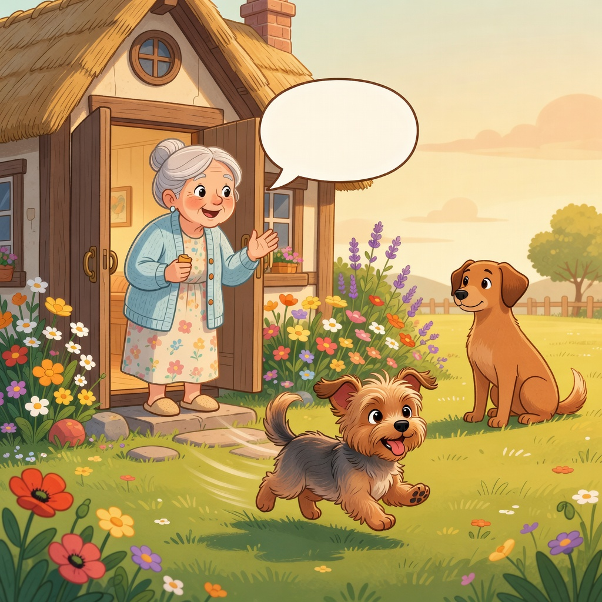

— Uma história de amizade verdadeira —
Suíta Cambita era uma vira-lata caramelo de orelhas em pé e olhos espertos. Ela morava na rua, mas tinha um coração enorme.
Valentina Valita era uma Yorkshire mestiça, pequenina, com pelagem cinza e dourada e orelhinhas caídas. Ela morava em uma casa com jardim.
Um dia, Valentina escapou pelo portão e saiu correndo rua abaixo. Ela nunca tinha ido tão longe!
Foi quando ela esbarrou em Suíta Cambita, que estava descansando perto da praça.
"Oi! Você está perdida?" perguntou Suíta, abanando o rabo. Valentina balançou a cabeça: "Estou explorando!"
Suíta riu. "Então vou com você! Conheço cada cantinho desta cidade."
Elas passaram pela padaria, onde o padeiro jogou um biscoito para elas. "Obrigada, seu padeiro!"
Depois foram ao parque. Suíta mostrou para Valentina o melhor lugar para cavar buracos.
Valentina nunca tinha cavado antes. Ela colocou as patinhas na terra e cavou um buraquinho bem pequeno.
"Você é uma cavadora nata!" disse Suíta. Valentina latiu de felicidade: "Au au!"
No fim da tarde, Valentina lembrou que precisava voltar para casa. "Será que vou encontrar o caminho?"
"Claro que sim! Eu te acompanho," disse Suíta. E as duas foram juntas, virando cada esquina.

Quando chegaram na casa de Valentina, a porta estava aberta e uma senhora chamava: "Valentina!"
"Mamãe! Eu fiz uma amiga!" latiu Valentina, pulando no colo da dona. A senhora sorriu e fez carinho nas duas.
Desde aquele dia, Suíta Cambita e Valentina Valita se encontraram todos os dias no parque. Amizade verdadeira não tem raça nem tamanho.